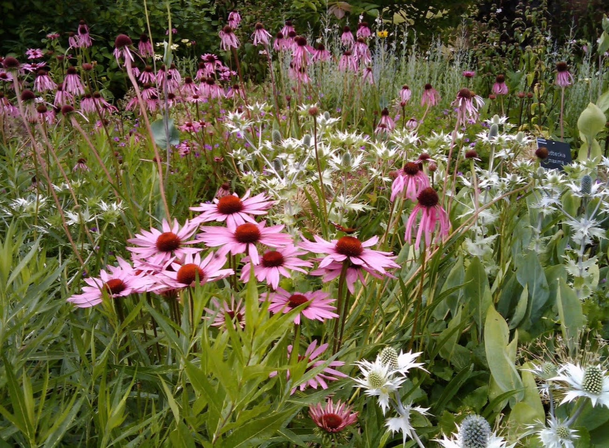
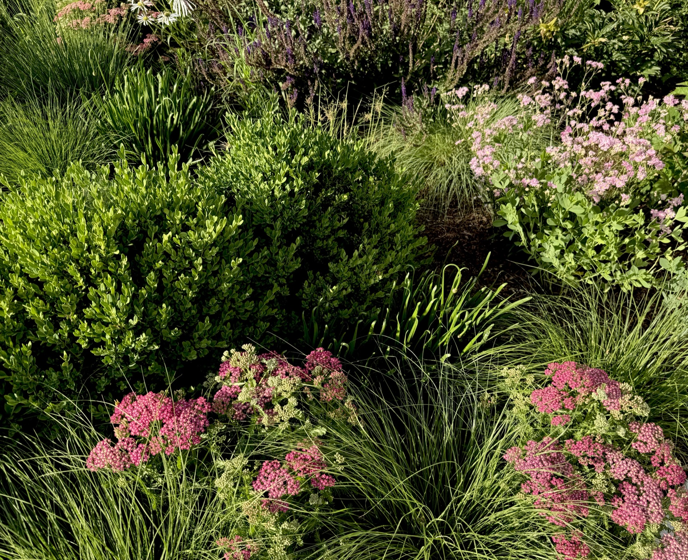
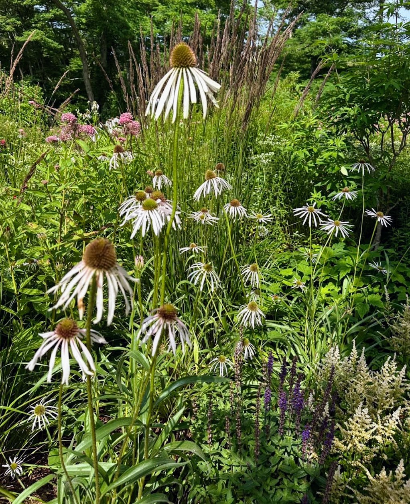

The place
The Yalecrest Meadow is an un-lawning; a deliberate upending of the manicured urban grid laid out along a shifting, light-catching terraced garden. It is a site-specific landscape that moves away from the traditional lawn to become an expansive native perennial meadow that opens up dramatically away from the old historic Yalecrest neighborhood home. These are gardened meadows — spaces managed with intentionality for flower, texture, and ecological drift.
The brief
The project is born from a profound, shared literacy of biodiversity, driven by a gardening pair. In an era of climate acceleration and collapsing biomes, the brief demanded a landscape that acts as an active, restorative intervention.
The design
“It’s an evolutionary design process,” notes the maker. The masterplan rejects direct mimicry, choosing instead an artist's sensibility balanced with the rigor allowing the wild and cultivated species intermingle. The design uses naturalistic plantings that honor a sense of place, establishing a framework of structural plants to support the ecosystem within a tight matrix of perennials.
The Sedge & Grass Matrix: The foundational understory is anchored by Achnatherum calamagrostis, a flowing entrypoint matrix that knits beautifully with summer perennials. This is woven with Sporobolus heterolepis (Prairie Dropseed), which catches the autumn tilt with brilliant copper-orange flushes.
The Spring Inflorescence (April–June): The year awakens with Allium christophii (Star of Persia), distinguishing itself through a diversity of height and exploding color. By mid-spring, the slope is animated by the brilliant scarlet of Papaver orientale ‘Matador’ interlocking with the upright, intense blues of Iris sibirica. The shrubby bulk of Baptisia ‘Twilite Prairieblues’ begins its slow clumping alongside Astrantia major ‘Roma’. In the high heat, the meadow sways with purple Allium ‘Miami’ that shoots up beside the soft-yellow dust of Thalictrum flavum subsp. glaucum and the pale, reflexed rays of Echinacea pallida, a magnet for bees and nectar-seekers.